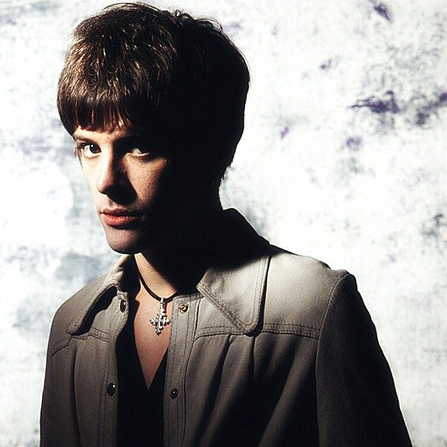
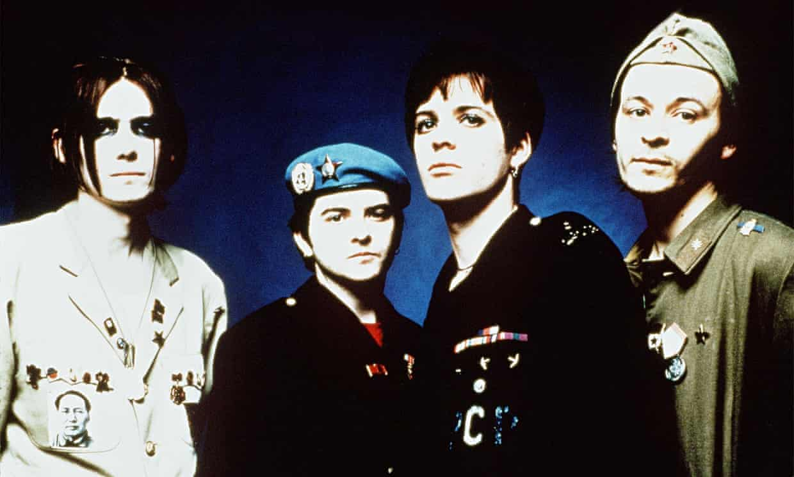
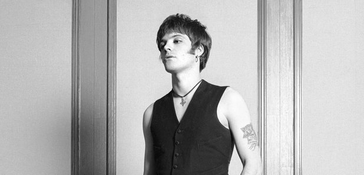
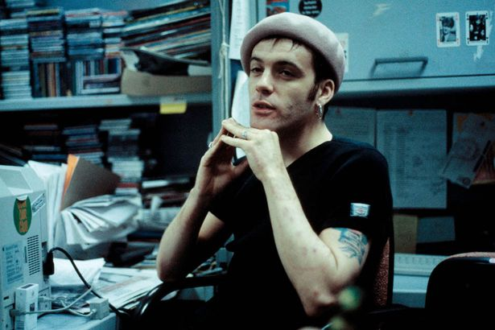
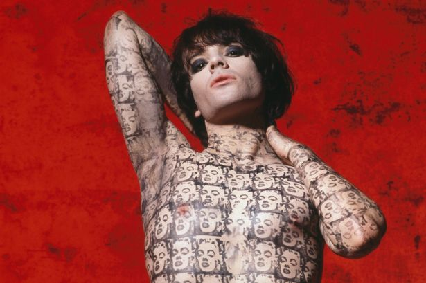

Richey Edwards
Former lyricist and rhythm guitarist with Welsh rock band Manic Street Preachers

Richey Edwards
"I have no regrets. Regrets are meaningless. You can't change yesterday or tomorrow. You can change only this present moment" - Richey Edwards
Considered by many to be the main influence behind Manic Street Preachers' early look and direction, Richey Edwards was an integral member of the band until his disappearance in 1995. Co-writing with bassist Nicky Wire, they were responsible for the intelligent, poetic, often political lyrics that the band are famous for. Richey was highly influential in the overall aesthetic of the band, designing record sleeves and artwork. Always open about his battle with depression, he was one of the first rock musicians in the UK to shine a spotlight on issues surrounding mental health. Throughout 1994, his behaviour became increasingly self-destructive until, ultimately, he went missing on the 1st February 1995. Below are some significant dates in his life, and in the career of the band.
- 22nd December 1967 - Born in Blackwood, Caerphilly, Wales
- 1986 - School friends James Dean Bradfield, Nicky Wire, and Sean Moore form Manic Street Preachers
- 1988 - Initially just being involved creatively behind the scenes and driving the band to gigs, Richey joins his friends to complete the line-up of Manic Street Preachers shortly after the release of the band's debut single 'Suicide Alley'. Soon becomes accepted as the band's spokesperson, and along with Nicky Wire, the main lyricist.
- 1989 - Graduates from University of Wales, Swansea with 2:1 in Political History
- 21st January 1991 - The single 'Motown Junk' is released on Heavenly Records
- 15th May 1991 - Gains notoriety after using a razor blade to carve the words "4 REAL" into his forearm following an argument with NME journalist Steve Lamacq, who had questioned the band's punk authenticity
- 10th February 1992 - The Manics release their debut album 'Generation Terrorists'. The album cover features Richey's chest and left arm, sporting his 'Useless Generation' tattoo, with the words changed to reflect the album title.
- 21st June 1993 - 'Gold Against the Soul', the band's second album is released
- 29th August 1994 - Manic Street Preachers release 'The Holy Bible', their third full-length album
- July-August 1994 - Misses several Manic Street Preachers festival appearances after checking himself into the Priory Hospital in an attempt to overcome his personal difficulties, which by this time include self-harm, anorexia, and heavy drinking
- 21st December 1994 - Plays his final show with Manic Street Preachers at the London Astoria
- January 1995 - The band begin rehearsals for their fourth album
- 23rd January 1995 - the last time Richey sees his parents
- 1st February 1995 - he disappears on the eve of travelling to America for a promotional tour with James Dean Bradfield and is never seen by any of his friends or family again
- 17th February 1995 - Richey's abandoned car is found at the Severn View service station. The service station's proximity to the Severn Bridge leads many people to believe that he took his own life by jumping from the bridge. No body, or other evidence that he killed himself has ever been found.



